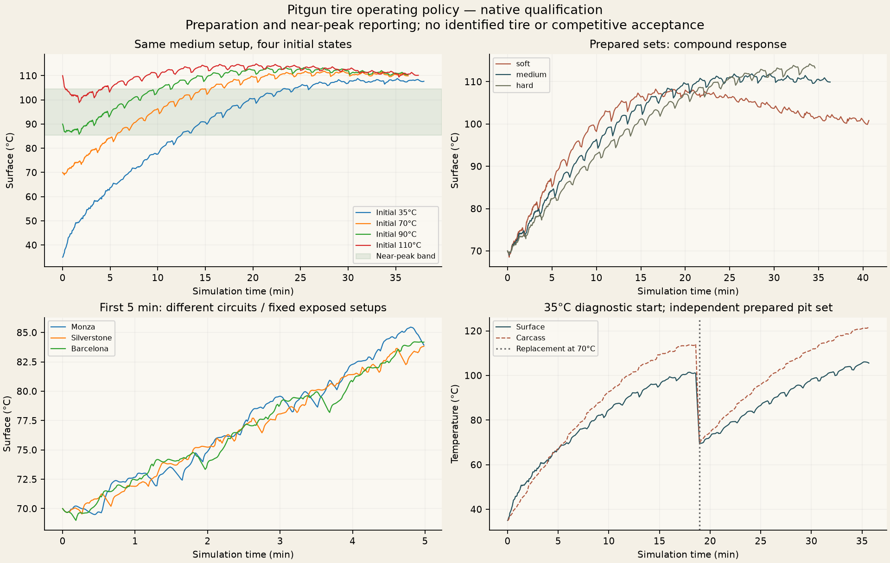
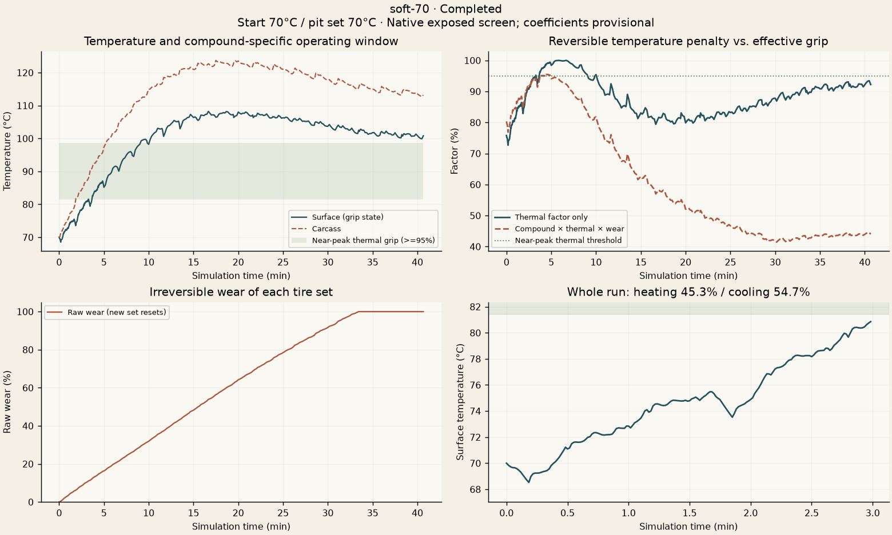

Pitgun · Tire thermal qualification
Native experimental model · coefficients provisional · no game activation. A prepared modern slick starts at 70°C. Cold/hot initial states are explicit diagnostics. The green band means at least 95% of the peak temperature-only grip factor; it does not mean that a worn tire retains 95% of its effective grip.

Inspect a scenario

Curves select native points every 1s during the first 300s, then every 10s plus lap endpoints. Small local cooling/heating can be visually smoothed. Metrics and events use all accepted native points; no physics sampling was reduced.
Driving time in each thermal band
Time is weighted by native segment duration using its starting temperature. Stops are excluded. “Floor” is time at the temperature-grip floor, which can hide sensitivity far from the optimum. Wear is the raw final-set state, not a universal pit threshold.
Policy, sources and limitations · Qualification results · Frozen native receipt
Source e4d4d2b169a3eae163a42015cb8e74519a005c9d. This exposed screen does not identify physical coefficients, prove balanced strategies or measure browser/WASM/VPS performance.